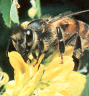
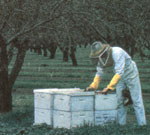
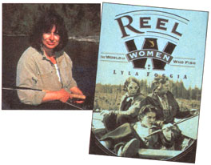
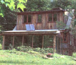

Bits and Pieces
Mites give bees a run for their honey.
Imagine a world without bees. Now imagine that same world without flowers, without honey, without strawberry plants. What most of us don't realize and what beekeepers have been saying all along is that the fate of this tiny buzzing insect affects us in many inexplicable ways. Next time a bee advances annoyingly close to you, don't swat at it. The sad truth is: wild bees are in trouble.
The decrease in bee populations is in no way sudden. What has been an ongoing problem is the result of an attack by two predominant types of mites: varroa mites ( V. Jacobsoni ) and tracheal mites ( A. Woodi ). While beekeepers have had some measured success in mite controls, it is the wild honeybees that are suffering the greatest loss.
The smallest of the two mites is the tracheal mite. It lives in the breathing tubes of adult honeybees and sucks their blood, causing adult bees to become disoriented and weak. The best known control for tracheal mites is a menthol treatment in the spring when the weather is warm and in late summer or fall of the year immediately following honey extraction. For a homemade treatment, enclose fifty grams (1.8 oz.) of crystalline menthol in a 7" x 7" plastic screen bag or equally porous material and place inside the colony for 20-25 days. If daytime temperature does not exceed 80° F, menthol should be placed on the top bars of the colony; during hot weather, it is better to place it on the bottom board. There should be no honey supers on the hive during the treatment, and the menthol should be taken out of a colony at least a month before any anticipated flow.
The varroa mite, originating in Asia, has spread to almost all parts of the world and is especially destructive to honeybee colonies. The adult female mites attach to the bee between the abdominal segments or body regions, and so are difficult to detect. The varroa mite attacks bees at their pupae, larvae, and adult stages, causing deformities like shortened abdomens, misshapen wings, and deformed legs, and eventually leading to death. Beekeepers are currently fighting the varroa mite with Apistan chemical strips placed in the hive at set times of the year.
What the toll of the mites means to consumers is the reduction of many valuable crops and a dramatic rise in honey prices. Honeybees pollinate some 90 different crops in the U.S. including melons, squash, broccoli, almonds, strawberries, blackberries, and raspberries. An estimated one third of the world food supply depends on insect pollination, either directly or indirectly. As the bee population decreases, many fruits or vegetables might be of such poor quality or low quantity that they will disappear from supermarkets.
The results of an International Bee Research Association conference held last October showed that an integrated approach combining several methods of control is most successful. Beekeepers should also deal with infested colonies immediately, lest they risk the possibility of contamination to neighboring hives, according to the American Beekeeping Federation.
Keeping in mind that bees are essentially nature's great pollinators, Dr. Leonard Feldman, president of the pest control company Whatever Works, is promoting the sale of Orchard Mason Bees. According to Dr. Feldman, "The Orchard Mason Bees are wonderful for pollinating apples, pears, cherries, and almonds. In addition to being effective pollinators, they're non-aggressive and quite safe to propagate in the suburban and urban backyards. They require minimal attention." While Orchard Mason Bees are not honey producers, they are also not affected by the mites that are felling honeybees. To order a tube of Orchard Mason Bees for $29.99, contact Whatever Works at 1-800-499-6757, or write them at the Earth Science Building, 74 20th Street, Brooklyn, NY 11232 for a catalog.
For further information on mites and/or bees, contact the American Beekeeping Federation at P.O. Box 1038, Jesup, GA 31598, or (912) 427-8447. The Honey Producers Association can be reached at P.O. Box 584, Cheshire, CT 06410, or (203) 250-7575.
Women's Reel News
Women have been fishing for 500 years. Yet Women Who Fish, which premiered in September, is the first mainstream publication dedicated solely to female anglers. Lyla Foggia, publisher and editor of the newspaper and author of the book REEL WOMEN. The World of Women Who Fish, says, "Fishing for women is about more than catching fish, which is why this publication is long overdue."
Women Who Fish aims to address the sport from a woman's unique perspective. According to Foggia, "Men and women look at fishing in entirely different ways. For men, it's more of a non-personal, scientific method to the sport, whereas for women, it's more emotional. A study done in 1996 showed that a majority of women fish to be with family and friends, and not because of the attraction of big fish." Foggia promises that Women Who Fish will be a very "emotional" newspaper-one unlike the more than 100 publications currently in print that examine just the how-to's of fishing. For example, every issue will feature "Meditations from the Heartland"-excerpts of women fishers' experiences and thoughts on the sport, guest columns by women in the sport, coverage of noteworthy events, notice of conservation and public service projects, and book previews.
For an annual subscription of 4 quarterly issues, send a check for $12.00 to WOMEN'S REEL NEWS, PO. Box 939, Welches, OR 97067. For additional information, you can also call (503) 6224811 or send an e-mail to ReeIWomen@aol.com .
National Tour of Solar Homes
The sun should be shining brightly on October 18th, 1997. No, it's not the latest development in long-term weather prediction. That's the day solar homeowners across the country will be opening their doors to the 5th annual National Tour of Solar Homes, sponsored by the American Solar Energy Society (ASES), the U.S. Department of Energy, and the Interstate Renewable Energy Council. The tour will include over 500 homes in more than 36 states.
According to Susan LeFever, communications director at ASES, the goal of the tour is best relayed through this year's theme, "Real Places for Real People." Her hope is that people will start to see solar power as a clean, efficient, and inexpensive energy source, rather than some futuristic or high- tech idea. "Solar power has been portrayed in the past as too expensive, too technically complex for the average home, or aesthetically unappealing, but attitudes are changing as more people see first-hand what it's about:'
Clay Turnbull, from Townshend, VT, showed his home last year and is planning on doing so again in October. He noticed that most of the tour-goers were interested in living in solar homes, but for different reasons. Turnbull says of his own decision: "I personally wanted to leave as small of a footprint as possible on this earth. I was willing to assume the responsibility of energy consumption:"
Tours generally include anywhere from five to fifteen homes, depending on geographic location. Local tours will be organized by Local Coordinating Organizations nationwide.
For information about showing your home or attending a tour, call the American Solar Energy Society at (303) 443-3130 or e-mail ases@ases.org . The ASES website can be reached at http://www.ases.org/solar/ .
This solar home in Vermont is one of the many stops on the tour.
PHOTOS: COURTESY OF AMERICAN SOLAR ENERGY SOCIETY
|
 A beekeeper works with domesticaed honeybees on his farm |
 Lyla foggia dedicates her work to women fishers. |
 Trombe walls and high thermal mass provide most of the heating needs for this adobe home in Santa Fe, New Mexico. |
|
This solar home in Vermont is one of the many stops on the tour. |
 |
|